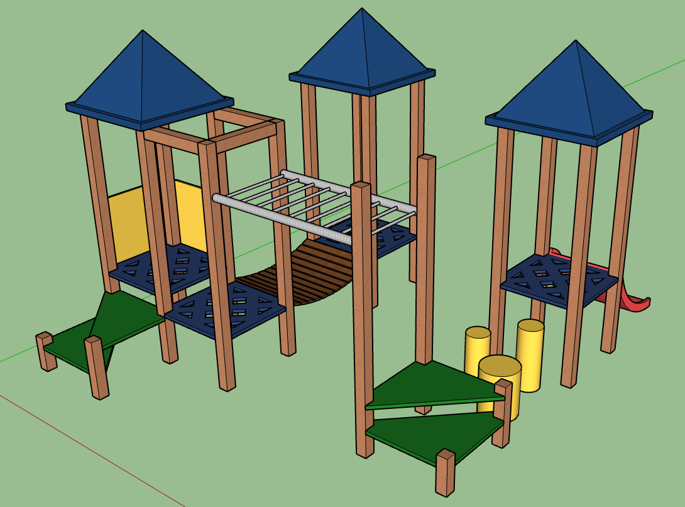

3D Renderer
A 3D renderer made in C++ using the SFML (Simple Fast Multimedia Library).
It's very barebones and can only handle wireframe rectangular prisms for now.
One day, I might make one using OpenGL, which is more widely used for 3D graphics.
Github Repository

ASTRISC CPU
Work in progess.
A 16 Bit CPU, the most powerful of all my CPUs until now.
The name is a combination of 'Astro' (my username) and RISC, which means
'Reduced Instruction Set Computer'. The repository includes an emulator
of the CPU made in C++ to simplify usage.
Github Repository

Logic Gates
This one's a quick little project I did, I made a circuit capable of storing a single bit.
A bit can store only either one, or zero.

My Game
Work in progress.
This is a game I'm working on in school, it takes place in space and I'm making it without
a game engine. Instead I'm using C++ and SFML.
Home Labbing
This is my home lab, it looks quite messy but its useful.
I bought a cheap refurbished computer in installed Proxmox,
a hypervisor (it runs virtual machines), and my Raspberry Pi 4
acts like a NAS (network attached storage).
School Assignments
Ring 3D Model
A 3D Model of a ring from a TV show I made in Blender for an assignment.
I find that I did a pretty good job on it, so I've decided to show it off.

Low Poly Dungeon
A low poly dungeon that I made, it has a few props in it. A barrel, a table, a hammer, a sword,
some torches, and a few other decorations. It's made in Blender

SketchUp Playground
A simple playground made in SketchUp, it uses components for flexibility. By using components
any change to a single elemnt, like if you change the color of a single roof it changes it for
all of them. This makes modifying everything of one type much more efficient.
Uranus Mathematica
For an assignment in Mathematica, I made Uranus and some of it's moons in Mathematica.
The planet and the orbit of its moons are tilted by about 90 degrees. The planet rotates
around itself, and the planets and moons orbit too.